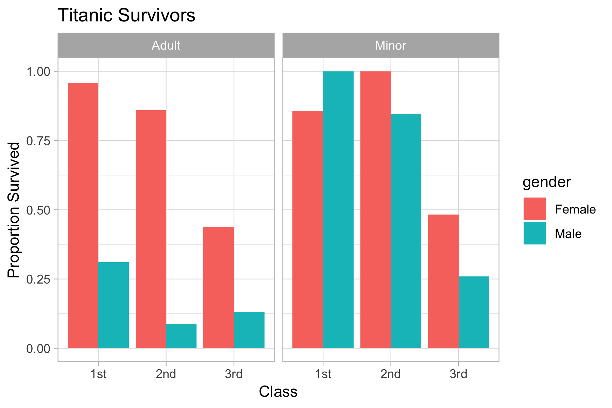
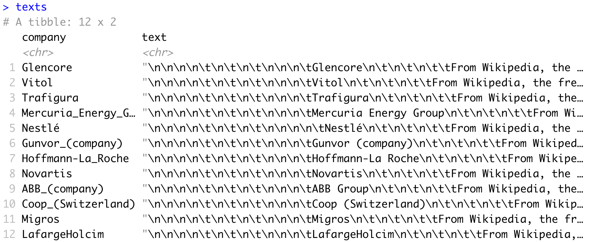
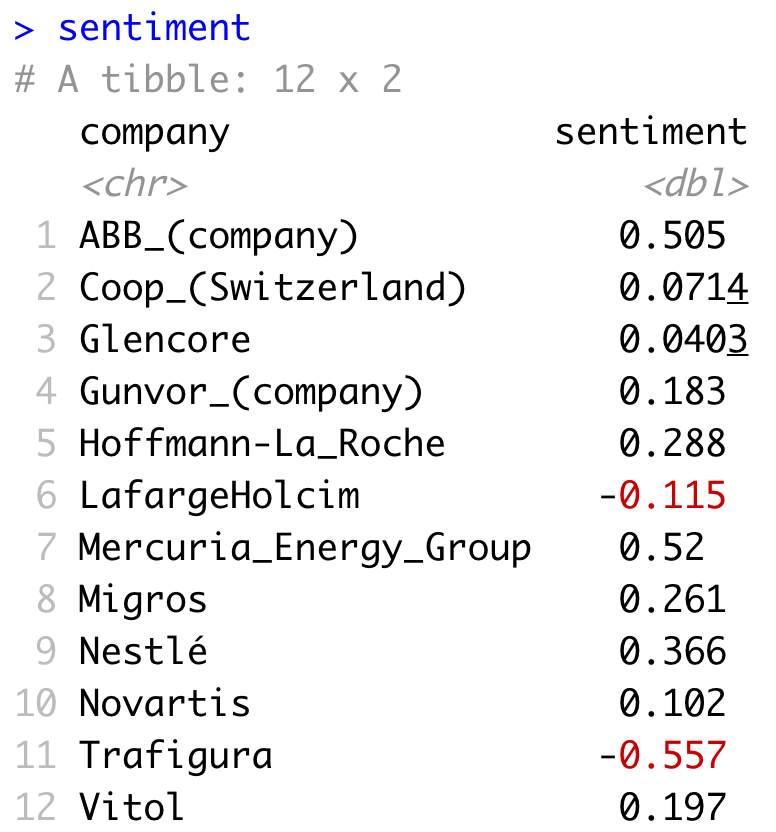

Unsere Kurse
Für Anfänger und Fortgeschrittene!
Unsere Kurse setzen sich aus kurzen, interaktive Präsentationen und längere, Schritt-für-Schritt Übungen zusammen. Dabei gehen wir auf Ihr spezifisches Niveau und Ihre Bedürfnisse ein, egal ob Sie noch in den Anfängen stecken oder schon fortgeschritten sind. Es sind jeweils mehrere Anleiter vor Ort, um sicherzustellen, dass alle Teilnehmenden den Kursinhalten folgen können. Bitte kontaktieren Sie uns, wenn Sie Fragen haben, und erkunden Sie unsere offenen Materialien.
-
Einführung in die moderne Datenanalyse mit R
200CHF @ Uni Basel
-

-

Maschinelles Lernen mit R
790CHF @ Uni Basel
Was Teilnehmer sagen
"Vielen Dank für den hervorragenden Kurs, ich habe wirklich viel gelernt. Die Materialien waren super nützlich und die Beispiele wirklich interessant. Außerdem wart ihr alle fantastisch, super hilfsbereit, engagiert und die Atmosphäre war wirklich anregend."
BRUNO, Head of Clinical Development
"Ein perfekter Kurs, für jeden der oder die ein gutes Verständnis für das maschinelle Lernen und seine Anwendung in R erlangen möchten. Der Kurs behandelt die wichtigsten Themen des maschinellen Lernens und ist sehr gut strukturiert. Am Ende werden Sie in der Lage sein, effektive maschinelle Lernmodelle zu erstellen, zu bewerten und zu optimieren. Die Dozenten sind begeistert vom Thema und haben alles auf sehr verständliche Weise erklärt."
FREDERIK, Senior consultant
"Ihr verdient alle Komplimente: für die Präsentation, das Training, eure Hilfe und nicht zuletzt für eure freundliche Art. Der Kurs lag über meinen Erwartungen! Das präsentierte Material war praxisnah und aktuell!"
STEFAN, Senior Risk Modeller & Researcher
"Ich habe von den Grundlagen bis hin zu wirklich coolen Dingen wie interaktiven Plots gelernt. Gleich nach dem Bootcamp entschied ich mich, komplett auf R umzusteigen. Wirklich tolles Bootcamp!"
EDGAR, Associate Professor
"Jeder Teilnehmer wird etwas für sie oder ihn relevantes gefunden haben, sei es Statistik, Visualisierung, Präsentation oder Web-Applikation. Es hat mich sicherlich dazu gebracht, meinen Computer nehmen zu wollen und sofort loszulegen!"
JOHAN, Analyst
"Lernen R im The R Bootcamp hat mir das Gefühl gegeben [...], in der sich wandelnden Finanzindustrie relevant zu bleiben."
IRENA, Credit Officer
"Ich hatte keine Programmiererfahrung, aber mit dem R Bootcamp (nach nur einem halbem Tag!) wurde R auf eine lockere und bequeme Art für mich zugänglich gemacht. Ich freue mich auf die nächsten Schritte mit R und R Bootcamp."
SARAH, Wissenschaftliche Mitarbeiterin, Pharma


Dr. Dirk Wulff
Gründer & Leitender Ausbilder
Ich forsche an der Universität Basel zum Themen Entscheidungswissenschaft und verwende Big Data um unser Verständnis des menschlichen Verhaltens zu verbessern.
Lieblings R-Paket
Rcpp um R blitzschnell zu machen.
Meine eigenen R-Pakete
cstab für Clusteringmethoden.
memnet zur Analyse von Gedächtnisnetzwerken.
mousetrap zur Analyse von Bewegungsverläufen.
Dr. Michael Schulte-Mecklenbeck
Ausbilder @ Bern
Ich lehre Methodik am Departement Betriebswirtschaft der Universität Bern und erforsche menschliche Entscheidungsprozesse mittels Augen- und Bewegungsverfolgung.
Lieblings R-Paket
tidyverse um Data Science effizient zu machen.
Meine eigenen R-Pakete
mousetrap zur Analyse von Bewegungsverläufen.
Einführung in die moderne Datenanalyse mit R
Lerne Data Science von Grund auf
Beschreibung
Daten sind das Gold des 21. Jahrhunderts. Wer Zugang zu Daten hat und sie zu nutzen weiss, kann beispielsweise den wissenschaftlichen und technologischen Fortschritt im Gesundheitswesen vorantreiben oder sich durch intelligentes Marketing kritische Wettbewerbsvorteile sichern. Egal welches Ziel das Ihre ist, ob Sie im Management oder in der Entwicklung arbeiten, Expertise im Bereich der modernen Datenanalyse wird zunehmend zum entscheidenden Faktor. Dieser Nachmittagskurs ermöglicht Ihnen den Einstieg in die Welt von Data Science und Big Data mittels der offenen Programmiersprache R, welche speziell für den Zweck von Data Analytics entwickelt wurde und zu den gefragtesten Tools in diesem Bereich zählt. Sie lernen die Grundlagen der Sprache kennen und werden in interaktiven Elementen an die eigenständige Umsetzung herangeführt. Am Schluss erfahren Sie wie Sie Ihre Reise in die Welt der modernen Datenanalyse fortsetzen können.
Voraussetzungen
Die Teilnahme an diesem Kurses benötigt keinerlei Vorkenntnisse. Teilnehmende benötigen einen eigenen Computer oder Laptop.
Details
| Kurssprache | Deutsch |
| Zeiten | Eintagskurs: Fr, 13.00-18.00 Uhr |
| Ort | Online (Zoom) |
| Gruppengrösse | Max. 20 Teilnehmende |
| Preis | 200.- CHF |
Aufbau
Der Kurs findet von 13:00 bis 18:00 Uhr statt und besteht aus einer Mischung aus Kurzvorträgen und interaktiven Elementen, in denen Sie die praktische Anwendung üben können. Alle Kursmaterialien, Beispiele, Übungen und Lösungen stehen Ihnen während und nach dem Kurs jederzeit online zur Verfügung.
Programm & Materialien (Änderungen vorbehalten)
| Tag 1 | |
|---|---|
| 1300 | Wilkommen |
| 1320 | Warum R? |
| 1340 | R(Studio) |
| 1425 | Assignments |
| 1520 | Funktionen |
| 1555 | Daten I/O |
| 1630 | Datenanalyse |
| 1700 | Nächste Schritte |
| 1745 | Wrap-up |
Wichtige Pakete
| base | Einfach base R. |
| stats | Rs Standard für Statistik. |
| graphics | Rs Standard für Visualisierungen (nicht zu verwechseln mit ggplot2). |
Explorative Datenanalyse mit R
Exploriere und visualisiere Daten mit R
Beschreibung
Jedes datengestützte Projekt beginnt mit der Datenaufbereitung und -exploration. Von diesem ebenso aufwendigen wie bedeutendem Projektabschnitt hängt alles Folgende ab. Er umfasst das Bereinigen und Verknüpfen von Datensätzen aus verschiedenen Quellen und die Visualisierung der darin enthaltenen Zusammenhänge. Kaum ein Werkzeug eignet sich für diese Aufgaben so gut wie die Programmiersprache R. An diesem vollgepackten Wochenende lernen Sie, wie Sie alle Elemente der Datenaufbereitung und -exploration mit R durchführen können. Sie lernen, wie Sie Daten von der Festplatte oder aus dem Internet laden, wie sie Daten bereinigen und organisieren, wie sie einfache deskriptive Analysen durchführen und, nicht zuletzt, wie Sie ästhetisch ansprechende, publikationsreife Visualisierungen erstellen.
Voraussetzungen
Teilnehmende dieses Kurses sollten über Grundkenntnisse in der Programmiersprache R verfügen. Für Interessierte ohne oder mit geringer Erfahrung in R empfehlen wir den Nachmittagskurs Einführung in die moderne Datenanalyse mit R zu besuchen. Wenn Sie nicht sicher sind, ob Sie über genügend Grundkenntnisse verfügen setzen Sie sich entweder direkt mit uns in Verbindung oder nehmen Sie zunächst am diesem QUIZ teil. Teilnehmende sind gebeten, einen eigenen Laptop mit Software-Installationsrechten mitzubringen.
Details
| Kurssprache | Deutsch |
| Zeiten | Zweitageskurs: Fr-Sa, 09.00-18.00 Uhr |
| Ort | Online (Zoom) |
| Gruppengrösse | Max. 20 Teilnehmende |
| Preis | 790.- CHF |
Aufbau
Der Kurs findet an zwei Tagen jeweils von 9:00 bis 18:00 Uhr statt. An beiden Tagen dienen Kurzvorträge und Beispiele zur Einführung in die einzelnen Themen. Der Grossteil der Zeit wird anschliessend praktischen Übungen gewidmet, die Ihnen "learning by doing" ermöglichen sollen. Mit mindestens 2 Anleitern vor Ort wird es ausreichend Zeit für eine 1:1 Betreuung während der Übungen geben. Alle Kursmaterialien, Tutorials, Beispiele, Übungen und Lösungen stehen Ihnen während und nach dem Kurs jederzeit online zur Verfügung. Sie finden unsere Materialien zu vergangenen Kursen unter offene Materialien erkunden.
Programm & Materialien (Feb, 2019, Änderungen vorbehalten)
| Tag 1 | Tag 2 | |
|---|---|---|
| 0900 | Willkommen | Rückblick |
| 0930 | Daten + | Plottig I + |
| 1200 | Lunch | Lunch |
| 1300 | Wrangling I + | Plottig II + |
| 1530 | Wrangling II + | Plottig III: + |
| 1745 | Wrap-up | Wrap-up |
Wichtige Pakete
| tidyverse | Eine Sammlung moderner Data Science-Pakete, einschliesslich readr, dplyr, and ggplot2. |
| readr | Praktisches Paket zum Einlesen von Textdateiformaten wie .csv und .txt. |
| dplyr | R's go-to Paket für data wrangling: Aufbereitung, Organisation und Zusammenführung von Datensets. |
| ggplot2 | Wohl das beste Paket zur Datenvisualisierung überhaupt, nicht nur in R. |
Statistik mit R
Treffen Sie datenbasierte Entscheidungen mit R
Beschreibung
Um robuste, entscheidungsrelevante Erkenntnisse aus Daten ziehen zu können, benötigen Sie Statistik. In diesem intensiven Kurs lernen Sie die Grundprinzipien der statistischen Datenanalyse mit R kennen, der Programmiersprache für Data Analytics und Statistik. Nach einer Einführung in die theoretischen Grundlagen lernen Sie, wie Sie Daten durch beschreibende Statistiken zusammen fassen können. Anschliessend lernen Sie, Regressionsmodelle zu implementieren und zu verstehen (z.B., Regression und ANOVA), um versteckte Zusammenhänge in Ihren Daten ersichtlich zu machen und auf ihre Robustheit zu prüfen. Sie erhalten darüber hinaus Einblick in neuere Methoden wie hierarchische Regression, Bayesianische Statistik und robuste Analyseverfahren.
Voraussetzungen
Teilnehmende dieses Kurses sollten über Grundkenntnisse in der Programmiersprache R verfügen. Für Interessierte ohne oder mit geringer Erfahrung in R empfehlen wir den Nachmittagskurs Einführung in die moderne Datenanalyse mit R zu besuchen. Wenn Sie nicht sicher sind, ob Sie über genügend Grundkenntnisse verfügen setzen Sie sich entweder direkt mit uns in Verbindung oder nehmen Sie zunächst am diesem QUIZ teil. Teilnehmende sind gebeten, einen eigenen Laptop mit Software-Installationsrechten mitzubringen. Neben Grundkenntnissen in R, sind Grundkenntnisse in Statistik hilfreich, aber nicht zwingend nötig.
Details
| Kurssprache | Deutsch |
| Zeiten | Zweitageskurs: Fr-Sa, 09.00-18.00 Uhr |
| Ort | Online (Zoom) |
| Gruppengrösse | Max. 20 Teilnehmende |
| Preis | 790.- CHF |
Aufbau
Der Kurs findet an zwei Tagen jeweils von 9:00 bis 18:00 Uhr statt. An beiden Tagen dienen Kurzvorträge und Beispiele zur Einführung in die einzelnen Themen. Der Grossteil der Zeit wird anschliessend praktischen Übungen gewidmet, die Ihnen "learning by doing" ermöglichen sollen. Mit mindestens 2 Anleitern vor Ort wird es ausreichend Zeit für eine 1:1 Betreuung während der Übungen geben. Alle Kursmaterialien, Tutorials, Beispiele, Übungen und Lösungen stehen Ihnen während und nach dem Kurs jederzeit online zur Verfügung. Sie finden unsere Materialien zu vergangenen Kursen unter offene Materialien erkunden.
Programm & Materialien (Apr, 2019, Änderungen vorbehalten)
| Tag 1 | Tag 2 | |
|---|---|---|
| 0900 | Willkommen | Rückblick |
| 0930 | Einführung in Statistik | Lineare Modelle III + |
| 1200 | Lunch | Lunch |
| 1300 | Lineare Modelle I + | Robuste Statistik + |
| 1530 | Lineare Modelle II + | Neue Statistik + |
| 1745 | Wrap-up | Wrap-up |
Wichtige Pakete
| stats | Beinhaltet |
| lme4 | Erweitert stats um hierarchische Modelle zu implementieren. |
| boot | Multifunktionswerkzeug für robuste Bootstrappinganalysen. |
| pwr | Für Poweranalysen in R. |
Maschinelles Lernen mit R
Lernen Sie prädiktive Algorithmen mit R zu erstellen.
Beschreibung
Maschinelles Lernen (Machine Learning) ist die Grundlage bahnbrechender Entwicklungen und Technologien in nahezu allen Wirtschafts- und Forschungszweigen. Wollen Sie erfahren was maschinelles Lernen so erfolgreich macht und wie Sie es mittels der Programmiersprache R für Ihre eigenen Zwecke nutzbar machen können? In diesem intensiven Kurs lernen sie die grundlegenden Prinzipien des maschinellen Lernens kennen und wie Sie diese mithilfe von R umsetzen können: vom Einlesen der Daten, über die Anwendung verschiedener Algorithmen, bis hin zur Bewertung derer Güte und Akkuratheit. Sie lernen die Besonderheiten gängiger Algorithmen wie Regression, Entscheidungsbäume oder Random Forests kennen. Sie erfahren von neueren Entwicklungen, wie dem Deep Learning, und erhalten einen Überblick über die verschiedenen Problemtypen, wie Regression, Klassifizierung, oder Clustering, und diskutieren mit uns die Chancen und Risiken des maschinellen Lernens für Wirtschaft und Gesellschaft.
Voraussetzungen
Teilnehmende dieses Kurses sollten über Grundkenntnisse in der Programmiersprache R verfügen. Für Interessierte ohne oder mit geringer Erfahrung in R empfehlen wir den Nachmittagskurs Einführung in die moderne Datenanalyse mit R zu besuchen. Wenn Sie nicht sicher sind, ob Sie über genügend Grundkenntnisse verfügen setzen Sie sich entweder direkt mit uns in Verbindung oder nehmen Sie zunächst am diesem QUIZ teil. Teilnehmende sind gebeten, einen eigenen Laptop mit Software-Installationsrechten mitzubringen. Neben Grundkenntnissen in R, sind Grundkenntnisse in Statistik hilfreich. Teilnehmende profitieren von einer vorherigen Teilnahme am Kurs Statistik mit R.
Details
| Kurssprache | Deutsch |
| Zeiten | Zweitageskurs: Fr-Sa, 09.00-18.00 Uhr |
| Ort | Online (Zoom) |
| Gruppengrösse | Max. 20 Teilnehmende |
| Preis | 790.- CHF |
Aufbau
Der Kurs findet an zwei Tagen jeweils von 9:00 bis 18:00 Uhr statt. An beiden Tagen dienen Kurzvorträge und Beispiele zur Einführung in die einzelnen Themen. Der Grossteil der Zeit wird anschliessend praktischen Übungen gewidmet, die Ihnen "learning by doing" ermöglichen sollen. Mit mindestens 2 Anleitern vor Ort wird es ausreichend Zeit für eine 1:1 Betreuung während der Übungen geben. Alle Kursmaterialien, Tutorials, Beispiele, Übungen und Lösungen stehen Ihnen während und nach dem Kurs jederzeit online zur Verfügung. Sie finden unsere Materialien zu vergangenen Kursen unter offene Materialien erkunden.
Programm & Materialien (Oct, 2019, Änderungen vorbehalten)
| Tag 1 | Tag 2 | |
|---|---|---|
| 0900 | Willkommen | Rückblick |
| 0930 | Was ist ML? | Optimisierung + |
| 1200 | Lunch | Lunch |
| 1300 | Fitting + | Features + |
| 1530 | Vorhersage + | Ausblick + |
| 1745 | Wrap-up | Wrap-up |
Wichtige Pakete
| caret | R's Schweizer Taschenmesser für das Training und die Evaluation über 200 Algorithmen des maschinellen Lernens. |
Reporting mit R
Lernen Sie dynamische, interaktive Berichte mit R zu erstellen.
Beschreibung
Eine der wichtigsten Aufgaben bei datengestützten Projekten ist die Kommunikation der Ergebnisse. Dabei kann es sich um Berichte, Präsentationen, oder interaktive Dashboards handeln. Die Programmiersprache R und R Studio gehören für diese Zwecke zu den besten verfügbaren Tools. In diesem intensiven Zweitageskurs lernen Sie, wie Sie mit Hilfe von RMarkdown dynamische Berichte und Folien ganz einfach in unterschiedlichen Formaten wie .html, .pdf, .docx oder .pptx erstellen und gestalten können. Dabei lernen Sie Analysen, Visualisierungen und Text in einem einzigen, beliebig reproduzierbaren Dokument zu erstellen. Ausserdem lernen Sie interaktive Dashboards mit Shiny erstellen können, damit Sie Daten und Abbildungen einfach explorieren und zur Exploration zur Verfügung stellen können.
Voraussetzungen
Teilnehmende dieses Kurses sollten über Grundkenntnisse in der Programmiersprache R verfügen. Für Interessierte ohne oder mit unzureichender Erfahrung in R empfehlen wir die Kurse Einführung in die moderne Datenanalyse mit R, oder Explorative Datenanalyse mit R zu besuchen. Wenn Sie nicht sicher sind, ob Sie über genügend Grundkenntnisse verfügen setzen Sie sich entweder direkt mit uns in Verbindung oder nehmen Sie zunächst am diesem QUIZ (bitly.com/weissichgenugüberR) teil. Teilnehmende sind gebeten, einen eigenen Laptop mit Software-Installationsrechten mitzubringen.
Details
| Kurssprache | Deutsch |
| Zeiten | Zweitageskurs: Fr-Sa, 09.00-18.00 Uhr |
| Ort | Online (Zoom) |
| Gruppengrösse | Max. 20 Teilnehmende |
| Preis | 790.- CHF |
Aufbau
Der Kurs findet an zwei Tagen jeweils von 9:00 bis 18:00 Uhr statt. An beiden Tagen dienen Kurzvorträge und Beispiele zur Einführung in die einzelnen Themen. Der Grossteil der Zeit wird anschliessend praktischen Übungen gewidmet, die Ihnen "learning by doing" ermöglichen sollen. Mit mindestens 2 Anleitern vor Ort wird es ausreichend Zeit für eine 1:1 Betreuung während der Übungen geben. Alle Kursmaterialien, Tutorials, Beispiele, Übungen und Lösungen stehen Ihnen während und nach dem Kurs jederzeit online zur Verfügung. Sie finden unsere Materialien zu vergangenen Kursen auf offene Materialien erkunden.
Programm & Materialien (Feb, 2020, Änderungen vorbehalten)
| Tag 1 | Tag 2 | |
|---|---|---|
| 0900 | Willkommen | Wiederholung |
| 0930 | Dynamische Berichte mit Markdown I | Folien mit Markdown |
| 1200 | Lunch | Lunch |
| 1300 | Dynamische Berichte mit Markdown II | Dashboards mit Shiny |
| 1530 | Styling dynamischer Berichte | Dashboards mit Shiny II |
| 1745 | Wrap-up | Wrap-up |
Wichtige Pakete
| rmarkdown | Paket zur Erstellung reproduzierbarer Berichte im .html, .doc, .ppt oder .pdf Format. |
| shiny | Paket zur erstellung interaktiver Dashboards. |

Why R?
5 reasons why you should learn R today.
1. R was designed for analytics
R was designed first and foremost as a language for analytics and statistics. For that reason, R makes it easy for you to run statistical analyses, may it be an A/B test or a complex machine learning algorithm, with minimal code. Thanks to modern packages such as dbplyr and RHadoop, R also enables you to use virtually the same code when analysing Gigabytes of data stored on databases as you would on a data from a small Excel spreadsheet.
2. R has an unrivaled set of free packages
As great as R’s core framework is, the language would not be nearly as popular as it is today if it weren’t for R’s unrivaled collection of (freely available!) packages. What is an R package? An R package is a collection of code designed to help you, the programmer, solve a particular task without having to program a solution yourself. It really is difficult to overstate comprehensiveness of the R package universe.
3. R enables you to make striking visualisations
As good as R is for statistics, it is as good, if not better, for data visualisation. Why? One word: ggplot2. The ggplot2 package makes it easy for anyone to create colorful, complex, striking visualisations with minimal code. For example, you can create the plot below with essentially only 5 lines of code.

4. R works great with other languages
There are cases where you may want to take advantage of the features of other languages, such as C++ for its blinding speed or SQL for querying relational databases. Thankfully, with packages such as Rcpp for C++ or dbplyr for SQL combined with the amazing RStudio integrated developer environment, you can easily supplement your R code with these and other languages.
5. R has a passionate, open community
Without question, one of the best things about R is its community of passionate users, developers and bloggers who will jump at the chance to show you all of the amazing things they are doing with R. With hundreds of bloggers sharing their code at r-bloggers.com or local meetup groups such as R-Ladies or Michael's Bern R Meetup, the opportunities to meet with and learn from other R users are really endless.

R for Data Science
using the amazing tidyverse
According to many estimates, data scientists spend most time not on the implementation of sophisticated algorithms, but on the preceding steps: first, cleaning and organizing the data, and then mining and visualizing their important trends. There are many tools to carry out these steps, but there is no better in R or any other language than the amazing tidyverse.
What is the tidyverse?
The tidyverse is a meta-package that combines several individual R packages - packages are free and openly available collections of functions - each geared towards an elementary Data Science task. For example, the readr package allows you to read in data files from your hard-drive, the dplyr package efficiently handles all cleaning, organization, and joining of data sets, and the ggplot2 package makes creating striking, publication-ready visualizations a piece-of cake.
The tidyverse is more
The tidyverse is also a new framework of working in R. The tidyverse comes with a novel, improved coding style centering on modular programming using the pipe operator
Tidyverse vs. classic R
For these and other reasons, we focus our bootcamp on R for Data Science predominantly on the tidyverse rather than the classic functionality within R. Not convinced about the beauty of the tidyverse? Check out the example below comparing the same analysis in tidyverse and more basic R style or join our course on R for Data Science.
Tidyverse
# 1. Load tidyverse & data library(tidyverse) # makes all tidyverse packages available titanic <- read_csv("https://osf.io/aupb4/download") # load data # 2. data transformation and aggregation using dplyr titanic <- titanic %>% mutate(sex = case_when(Sex == "male" ~ "Male", TRUE ~ "Female"), age = case_when(Age >= 18 ~ "Adult", Age < 18 ~ "Minor"), class = factor(PClass)) %>% drop_na() %>% rename(gender = sex) %>% group_by(class, gender, age) %>% summarise(survival = mean(Survived)) # 3. plot using ggplot2 ggplot(titanic, aes(class, survival, fill = gender)) + geom_bar(stat = "identity", position = position_dodge()) + labs(x = "Class", y = "Proportion Survived", title = "Titanic Survivors") + facet_wrap(~ age) + theme_light()
Classic R
# 1. Load data titanic <- read.csv("https://osf.io/aupb4/download") # load data # 2. data transformation and aggregation using base R titanic$gender = titanic$Sex titanic$gender[titanic$gender == "male"] <- "Male" titanic$gender[titanic$gender == "female"] <- "Female" titanic$age <- ifelse(titanic$Age >= 18, "Adult", "Minor") titanic$class <- factor(titanic$PClass) titanic <- aggregate(titanic$Survived, list(class = titanic$class, gender = titanic$gender, age = titanic$age), mean) names(titanic)[4] <- "survival" # 3. plot using base R layout(matrix(c(1,2,3), nrow = 1), width = c(.4,.4,.2)) par(mar <- c(5.1, 4.1, 6.1,0)) cols <- c(rgb(232, 125, 114, maxColorValue = 255), rgb(84, 188, 194, maxColorValue = 255)) barplot(survival ~ gender + class, data = subset(titanic, age == "Adult"), beside = TRUE, ylim = c(0, 1), ylab = "Proportion Survived", xlab = "Class", main = "Titanic Survivors", las = 1, cex.lab = 1.5, cex.axis = 1.25, cex.main = 1.8, col = cols, border = NA) axis(side = 1, at = c(-1, 12)) rect(0.68, 1.01, 9, 1.08, col = "lightgrey", border = NA, xpd = TRUE) text(5, 1.04, "Adult", xpd = TRUE, cex = 1.6) barplot(survival ~ gender + class, data = subset(titanic, age == "Child"), beside = TRUE, ylim = c(0, 1), ylab = "Proportion Survived", xlab = "Class", las = 1, cex.lab = 1.5, cex.axis = 1.25, col = cols, border = NA) axis(side = 1, at = c(-1, 12)) rect(0.68, 1.01, 9, 1.08, col = "lightgrey", border = NA, xpd = TRUE) text(5, 1.04, "Minor", xpd = TRUE, cex = 1.6) plot.new() plot.window(xlim = c(0, 1), ylim = c(0, 1)) par(mar = c(0, 0, 0, 0)) points(c(-.5, -.5), c(.525, .445), pch = 15, col = cols, cex = 4, xpd = TRUE) text(c(-.25, -.25), c(.525, .445), labels = c("Female", "Male"),offset = 0, cex = 1.8, adj = 0) text(-.55, .65, "Gender", cex = 2, font = 2, adj = 0, offset = 0)

Sentiment
Analyse sentiment using tidytext
Sentiment analysis is a powerful tool with diverse areas of application that allows one to assess the affective content of pieces of text. For example, say you are interested in the impact of a novel compaign targeted at improving your companies image. One way to track the success of your compaign would be to analyze the sentiment that customers express on social media posts or product reviews.
R is great for natural language processing
Turns out that R has a number of tidyverse-related packages that make carrying out such analyses surprisingly easy. The packages xml2 and rvest help you pull any kind of information from the internet and, once text is imported into R, the tidytext package allows you to very efficiently perform many natural langugage processing tasks including sentiment analysis.
Sentiment of Swiss companies
The example below illustrates the ease of conducting sentiment analysis of text available online. The analysis first downloads the English Wikipedia pages of the twelve highest-grossing Swiss companies. Then, in just five lines, the code computes the average sentiment of each company based on the words available in the respective articles.
# 0. load packages require(tidyverse) require(xml2) require(rvest) require(tidytext) # 1. get website urls companies <- c( "Glencore", "Vitol", "Trafigura", "Mercuria_Energy_Group", "Nestlé", "Gunvor_(company)", "Hoffmann-La_Roche", "Novartis", "ABB_(company)", "Coop_(Switzerland)", "Migros", "LafargeHolcim") urls <- paste0("https://en.wikipedia.org/wiki/", companies) # 2. read Wikipedia articles texts <- map(urls, function(x){ x %>% read_html() %>% html_node("body") %>% html_text()}) texts<- tibble(company = companies, text = unlist(texts))

# 3. get sentiments using tidytext sentiment <- texts %>% unnest_tokens(word, text) %>% inner_join(get_sentiments("afinn")) %>% group_by(company) %>% summarize(sentiment = mean(score))


Dynamic Reports
created easily using tidytext
The critical, final stage of any analysis is communication. In one way or another, the collected insights must find their way into a document or presentation, may for it be a periodical report or a research project. This achieved by transferring the numerical results and figures into another software used for creating the report by hand. Clearly, however, this is unnecessarily tedious, inflexible, and prone to errors. That is, if you knew R Markdown.
What is R Markdown?
R Markdown is an extension to Markdown, a lightweight markup language (https://en.wikipedia.org/wiki/Markdown). R Markdown provides you with a very simple syntax for creating and formatting documents that allows you to combine your R analysis code, the output that it produces, and plain text surrounding analysis. This means that when using R Markdown there is no more copy and pasting, everything is in one place.
Creating dynamic reports with R Markdown
Using R Markdown has loads of advantages. The most important one is that your documents become reproducible and dynamic. When you have everything in one place, making changes to the analysis or using a different set of data becomes entirely hassle-free. All you need to do is to make these changes and then re-”knit” the document, which will automatically re-create your document with all changes incorporated. Another benefit is that you can be sure your document reflects with 100% accuracy the results of your analysis. Typos in any of the important numbers? Not possible.
R Markdown is amazingly versatile
We rely heavily on R Markdown to create the diverse materials for our Bootcamps. All slides used for our presentations are entirely created using R Markdown, and so are documents that guide through the coding exercises. Both elements we produce as .html files so that our materials can be made accessible online. See, for instance, our slides on What is Machine Learning? or our exercise on Data Wrangling (includes solutions). However, you can use R Markdown to generate many different types of formats including nicely formatted PDF or Word documents.
Want to learn more about R Markdown, and reporting using R in general? Check out the freely available book R Markdown - The Definitive Guide, or join our course on Reporting with R, which we hope offer in the near future.
Offene Materialien
Im Sinne von R's offener Philosophie sind die Materialien unserer Kurse öffentlich zugänglich. Entdecken Sie unten die Materialien unserer vergangenen Kurse.
Einführung in die moderne Datenanalyse mit R
Starte deine Reise in die Welt der Datenanalyse mit R
Oktober 2022 | 1/2 TagApril 2022 | 1/2 Tag
Februar 2022 | 1/2 Tag
Oktober 2021 | 1/2 Tag
August 2021 | 1/2 Tag
März 2021 | 1/2 Tag
Februar 2021 | 1/2 Tag
Oktober 2020 | 1/2 Tag
August 2020 | 1/2 Tag
März 2020 | 1/2 Tag
Februar 2020 | 1/2 Tag
November 2019 | 1/2 Tag
Explorative Datenanalyse mit R
Exploriere und visualisiere Daten mit R
März 2022 | 2 TageSeptember 2021 | 2 Tage
März 2021 | 2 Tage
September 2020 | 2 Tage
February 2020 | 2 Tage
February 2019 | 2 Tage
October 2018 | 2 Tage
July 2018 | 4 Tage
April 2018 | 4 Tage
Statistik mit R
Triff datenbasierte Entscheidungen mit R
April 2022 | 2 TageOktober 2021 | 2 Tage
April 2021 | 2 Tage
September 2020 | 2 Tage
Mai 2020 | 2 Tage
April 2019 | 2 Tage
Maschinelles Lernen mit R
Lerne mit R prädiktive Algorithmen zu erstellen
Oktober 2020 | 2 TageApril 2020 | 2 Tage
Oktober 2019 | 2 Tage
Mai 2019 | 2 Tage
January 2019 | 2 Tage
Reporting mit R
Lernen Sie dynamische, interaktive Berichte mit R zu erstellen.
Februar 2021 | 2 TageJuni 2020 | 2 Tage
Terms of Use
13 June 2019
Agreement to terms
You agree that by accessing the Site. you have read, understood, and agreed to be bound by all of these Terms of Use. Supplementary terms and conditions or documents that may be posted on the Site from time to time are hereby expressly incorporated herein by reference. You will be deemed to have been made aware of and have accepted the changes in any revised Terms of Use by your continued use of the Site.
License
Unless otherwise indicated, the Site and its contents are licensed under the Creative Commons Attribution 4.0 licensing terms. If you are interested in using content on this size, please take a moment to read the full Creative Commons Attribution 4.0 licensing terms.


Third-party content
The site may contain links to other websites and conent belonging to third parties. Such websites and content are not investigated by us and we are not responsible for any third-party websites or content accessed through the Site.
Term and termination
These Terms of Use shall remain in full force and effect while you use the Site.
Modifications
We reserve the right to change, modify, or remove the contents of the Site at any time or for any reason at our sole discretion without notice. However, we have no obligation to update any information on our Site. We also reserve the right to modify or discontinue all or part of the Site without notice at any time.
Contact us
In order to resolve complaint regarding the Site or to receive further information regarding use of the site, please contuct us at:
The R Bootcamp
Faculty of Psychology
Missionstrasse 64A
CH-4055 Basel
Mail
Privacy
13 June 2019
This page informs you of our policies regarding the collection, use and disclosure of Personal Information we receive from users of the Site. We use your Personal Information only for providing and improving the Site. By using the Site, you agree to the collection and use of information in accordance with this policy.
Information collection and use
While using our Site, we may ask you to provide us with certain personally identifiable information that can be used to contact or identify you. Personally identifiable information may include, but is not limited to your name.
Log data
Like many site operators, we collect information that your browser sends whenever you visit our Site. This Log Data may include information such as your computer's Internet Protocol address, browser type, browser version, the pages of our Site that you visit, the time and date of your visit, the time spent on those pages and other statistics. In addition, we may use third party services such as Google Analytics that collect, monitor and analyze this data.
Communications
We may use your Personal Information to contact you with newsletters, marketing or promotional materials and other information pertaining to our training and consultinig services.
Cookies
Cookies are files with small amount of data, which may include an anonymous unique identifier. Cookies are sent to your browser from a web site and stored on your computer's hard drive. Like many sites, we use "cookies" to collect information. You can instruct your browser to refuse all cookies or to indicate when a cookie is being sent. However, if you do not accept cookies, you may not be able to use some portions of our Site.
Securities
The security of your Personal Information is important to us, but remember that no method of transmission over the Internet, or method of electronic storage, is 100% secure. While we strive to use commercially acceptable means to protect your Personal Information, we cannot guarantee its absolute security.
Changes to this privacy policy
This Privacy Policy is effective and will remain in effect except with respect to any changes in its provisions in the future, which will be in effect immediately after being posted on this page. We reserve the right to update or change our Privacy Policy at any time and you should check this Privacy Policy periodically. Your continued use of the Service after we post any modifications to the Privacy Policy on this page will constitute your acknowledgment of the modifications and your consent to abide and be bound by the modified Privacy Policy.
Contact us
In order to resolve complaint regarding the Site or to receive further information regarding use of the site, please contact us at:
The R Bootcamp
Faculty of Psychology
Missionstrasse 64A
CH-4055 Basel
Mail